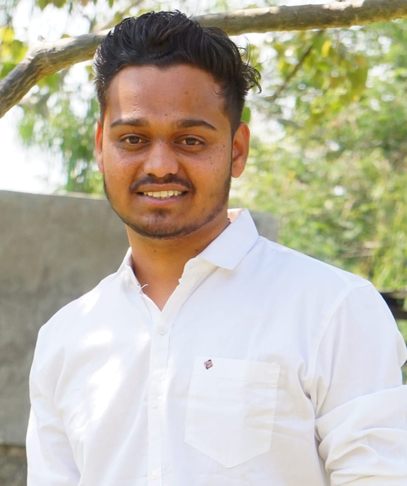

Tushar Uchit

9145300474
Linkdin Profile
tusharuchit31@gmail.com
Summary:
Looking forward for challenging and enriching role in the field of
Web Development and strengthen the overall organizational
performance that drives towards profits.
Education
- BE ELectrical
- Dr. Vithalrao Vikhe Patil College Of Engineering Ahmednagar
- 2020 - 2023
- 8.10
- Diploma In Electrical
- Sanjivani K.B.P Polytechnic Kopargaon
- 2018 - 2020
- 87.44 %
Work Experience (7 Months)
- Technical Support Executive At Techmainstay Software Pvt. Ltd.
- Installing And Configuring The Software
- Giving The Software Training To The Clients
- Resolved The Clients Queries Related To The Software
Technical Skills
- HTML
- CSS
- Javascript
- Node.js
- react.js
- SQL
- Web3
- DApps
Soft Skills
- Communication
- Leadership
- Problem Solving
Hobbies
- Playing Cricket
- Travelling